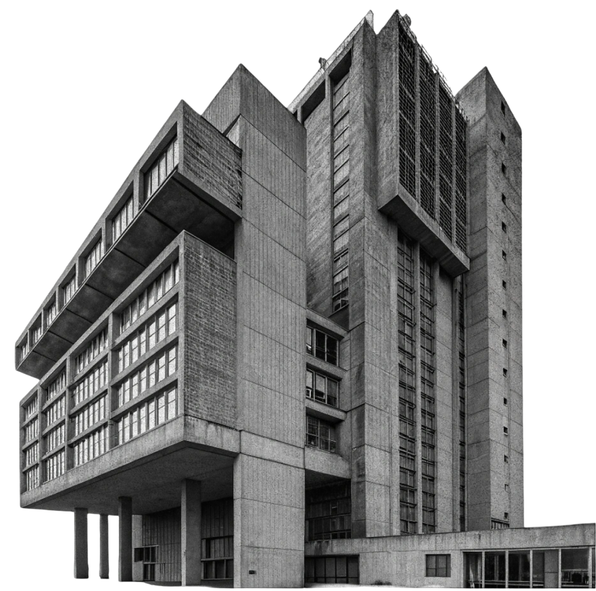

BRUT -- ARCH

We create spaces
that speak for
themeselves
ARCH
BRUT
is a architecture as a
manifesto
We work with concrete, steel and glass, creating spaces where form follows substance. No embellishments, just honesty of materials and ideas. Our goal is buildings that stand up to time and trends.
Benefist
WHY BRUT ARCH?
Material Integrity we only use what stands up to time Functionality each element serves a purpose, not decoration Individuality each project reflects the client's character Experience 10+ years working with concrete and steel
Work process
HOW WE WORK?
Concept
discussion of ideas, rough sketches.
Real isation control at
all stages of construction.
Design drawings and 3D models.
Site handover
final inspection, handover of the project and post- com
letion su ort.